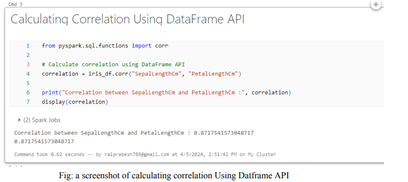

Data Exploration In DataBricks
Data Exploration of Sales Dataset in DataBricks.
Big Data Analyst skilled in SQL (MySQL, PostgreSQL), Hadoop, Spark, Python (including libraries like Pandas and NumPy), and
DataBricks. Proficient in data manipulation, analysis, and visualization using various tools and frameworks to derive
actionable insights. @My_RESUME
Data Exploration of Sales Dataset in DataBricks.
Data Exploration of Menu Dataset in DataBricks.

In this project, data analysis was conducted using PySpark and visualizations in Databricks on sales and menu datasets, deriving actionable insights and key performance indicators (KPIs) for informed decision-making.

In this project, a MapReduce program for processing the provided text file (word_count.txt) was developed using Apache Spark within Databricks.
In this project, I utilized Apache Spark and Databricks Community Edition to perform correlation analysis on the Iris dataset. The primary objectives were to calculate correlations between different variables using both DataFrame API and RDD, and then visualize the correlation matrix as a heatmap.
The project involves performing tasks related to directory creation, file manipulation, and Hadoop Distributed File System (HDFS) management in the ITVersity lab. The project consists of several steps, including creating a directory using my first and last name (pRai), writing and executing a Python script using Vim, navigating the Hadoop directory using commands like $hdfs fs or $hadoop dfs, and checking file permissions. Additionally, I was required to analyze the configuration of HDFS and calculate the number of blocks created and the size of each block for a file of a specific size.
About Project:
a. Create a directory by your first & last name: Create a directory with the specified naming convention.
b. Open Vim:
c. Write a Python file and save it with .py extension: Utilized Vim to write a Python script and saved it with the .py
extension.
d. Execute your Python code: Executed the Python code within the Vim environment.
e. Navigate the Hadoop directory using $hdfs fs or $hadoop dfs command: Utilized Hadoop commands to navigate the Hadoop
directory.
f. Check for the file permissions: Verified file permissions using appropriate commands.
SCREENSHOTS
Creating a Directory
Creating a Python file and save it with .py extension
Navigating Hadoop directory using hdfs dfs command
In this project, a fundamental MapReduce task was undertaken using Python to analyze the content of a text file within the ITVersity lab environment. The objective was to gain practical experience in implementing the MapReduce paradigm and performing basic data analysis tasks.
About Project:
a. Create an .txt file: Created a text file named assignment2.txt to serve as input data for the MapReduce task.
b. Create a mapper.py program: Developed a Python script named mapper.py to serve as the Mapper function in the MapReduce process. The Mapper function
extracts relevant information from the input data.
c. Create a reducer.py file: Developed a Python script named reducer.py to serve as the Reducer function in the MapReduce process. The Reducer
function aggregates and processes the output generated by the Mapper function.
d. Perform a Mapper task by passing the file to the mapper.py: Executed the Mapper task by passing the assignment2.txt file to the mapper.py script, which generated intermediate
key-value pairs.
e. Perform a Reducer task by passing the file to the reducer.py: Executed the Reducer task by passing the output generated by the Mapper task to the reducer.py script, which produced
the final output based on the MapReduce computation.
SCREENSHOTS
Creating .txt file
Creating mapper.py program

Perform a Mapper task by passing the file to the mapper.py;

Creating reducer.py Program

Perform a Reducer task by passing the file to the reduce.py, which takes two arguments;

In this project, a fundamental MapReduce task was undertaken using Python to analyze the content of a text file within the ITVersity lab environment. The objective was to gain practical experience in implementing the MapReduce paradigm and performing basic data analysis tasks.
About Project:
a. Create an .txt file: Created a text file named assignment2.txt to serve as input data for the MapReduce task.
b. Create a mapper.py program: Developed a Python script named mapper.py to serve as the Mapper function in the MapReduce process. The Mapper function
extracts relevant information from the input data.
c. Create a reducer.py file: Developed a Python script named reducer.py to serve as the Reducer function in the MapReduce process. The Reducer
function aggregates and processes the output generated by the Mapper function.
d. Perform a Mapper task by passing the file to the mapper.py: Executed the Mapper task by passing the assignment2.txt file to the mapper.py script, which generated intermediate
key-value pairs.
e. Perform a Reducer task by passing the file to the reducer.py: Executed the Reducer task by passing the output generated by the Mapper task to the reducer.py script, which produced
the final output based on the MapReduce computation.
SCREENSHOTS
Creating .txt file
Creating mapper.py program
Perform a Mapper task by passing the file to the mapper.py;
Creating reducer.py Program
Perform a Reducer task by passing the file to the reduce.py, which takes two arguments;
This project entailed the creation of a schema structure for two provided CSV files, namely menu.csv and sales.csv, followed by the development of insightful visualizations for key performance indicators (KPIs) extracted from the dataset.
About Project:
DataSet
"MENU Data" (VIEW menu.csv)
"Sales Data" (VIEW sales.csv)
a. Schema Structuring:
- Utilized data structuring techniques to design a schema for the provided CSV files (menu.csv and sales.csv).
- Established appropriate data types and relationships to ensure data integrity and facilitate effective analysis.
b. Visualization Development:
- Total Amount Spent on Each Food Category: Developed visual representations showcasing the total expenditure on various
food categories, aiding in understanding customer preferences and sales distribution.
- Total Amount Spent by Each Customer: Created visualizations illustrating individual customer spending patterns,
facilitating personalized marketing strategies and customer relationship management.
- Total Amount of Sales for Each Month: Generated visual insights into monthly sales volumes, facilitating the
identification of seasonal trends and informing inventory management decisions.
- Yearly and Quarterly Sales: Analyzed sales data to discern annual and quarterly performance trends, providing strategic
planning and forecasting insights.
- Top Ordered Food Items: Identified the most frequently ordered items through visual analysis, informing menu
optimization strategies and inventory stocking decisions.
- Total Sales by Each Country: Visualized sales data by country to assess regional performance and identify potential
market expansion opportunities.
Through this project, I enhanced my proficiency in data structuring and visualization techniques. By leveraging the
schema structure and developing insightful visualizations, I gained valuable insights into sales trends, customer
behavior, and market dynamics, empowering data-driven decision-making processes.
SCREENSHOTS
Schema for Menu Data
Schema for Sales Data
Joining the Sales and Menu data (Preparation for data visualization)
Total Amount spent by each food category and Visualization
Total Amount spent by each customer and Visualization

Total Amount of sales for each month and Visualization

Total Amount of sales for Yearly sales and Visualization

Total Amount of sales for quarterly sales and Visualization

The top-ordered food items

The total sales by each country

This project involved creating a MapReduce program using Apache Spark within a Databricks notebook to analyze the content of a given text file (wordcount.txt). The objective was to implement the MapReduce paradigm to process and analyze the text data efficiently.
Through this project, I gained practical experience in implementing the MapReduce paradigm using Apache Spark within the Databricks notebook environment. By following the specified steps and leveraging Spark's distributed computing capabilities, I was able to efficiently process and analyze text data, demonstrating proficiency in big data analytics and distributed computing techniques.
About Project:
a. Loading Text File and Assigning RDD:
- Load the text file wordcount.txt from the local file system into Apache Spark, assigning it to a Resilient Distributed
Dataset (RDD) variable.
b. Retrieving RDD Contents as Local Collection:
- Retrieved the RDD contents as a local collection by using the rdd.collect() function to facilitate further processing.
c. Mapping Elements to Zero or More Others:
- Map each element in the RDD to zero or more other elements based on specified criteria or operations.
d. Applying Lambda Function:
- Pass each element through a lambda function to perform individual processing steps or transformations.
e. Aggregating Data with Reduce Function:
- Used an associative reduce function to aggregate data corresponding to a key, consolidating and summarizing information
as needed.
f. Writing Elements to a Text File:
- Write the results to a new text file using the saveAsTextFile() function, saving the output for further analysis or
presentation.
SCREENSHOTS
Dataset
Loading data into Databricks

A Databricks notebook was employed for statistical analysis of the IRIS flower dataset using Apache Spark. The aim was to investigate correlations among various variables by generating a heatmap through a correlation matrix.
DATASETAbout Project:
a. Importing Required Library:
- The IRIS dataset is uploaded to the Databricks File System Target Directory with the URL /FileStore/tables/Iris.csv.
Following that, essential libraries such as SparkSession, functions for correlation computation, and visualization
libraries are imported. SparkSession is imported to the Databricks using the "from" and "import" functions.
b. Correlation using DataFrame API:
- Through the loaded DataFrame, correlations between different columns, representing variables within the IRIS dataset,
are computed using Spark's DataFrame API.
This method streamlines the process, enabling direct computation of correlations between columns.
The correlation analysis highlights the relationship between variables like SepalLenghtCm and PetalLenghtCm of an Iris
Flower.

The correlation analysis using DataFrame API shows a strong positive relationship between the
SepalLengthCm and PetalLengthCm variables in the Iris dataset. With a correlation coefficient of
approximately 0.87, we observe a robust linear association between these two attributes. This correlation
coefficient indicates that as the length of the sepals increases, there is a corresponding increase in the size
of the petals, and vice versa. The scatter plot visualization further reinforces this finding, as the data
points cluster around a positively sloped line. This strong positive correlation implies that changes in
SepalLengthCm are closely related to changes in PetalLengthCm, providing valuable insights into the
interdependence of these two characteristics within the Iris dataset.
c. Correlation using RDD:
- In this step, the Iris Dataset transformed into an RDD (Resilient Distributed Dataset), and the Statistics.corr()
function from the pyspark.mllib.stat module is employed to calculate the correlation.
This approach proves beneficial for handling more intricate computations or situations where the DataFrame API alone may
not be adequate.
From the above the correlation matrix presents several key relationships among the variables in the Iris
dataset. Firstly, SepalLengthCm exhibits a strong positive correlation with PetalLengthCm (correlation
coefficient = 0.871754) and PetalWidthCm (correlation coefficient = 0.817954). This shows that as the
length of sepals increases, there is a corresponding increase in the length and width of petals. Conversely,
SepalWidthCm shows a weak negative correlation with both SepalLengthCm (correlation coefficient =
-0.109369) and PetalLengthCm (correlation coefficient = -0.420516), implying a slight decrease in sepal
width as sepal and petal lengths increase. Secondly, SepalWidthCm and PetalWidthCm demonstrate a
moderate negative correlation (correlation coefficient = -0.356544), indicating that as the width of sepals
increases, the width of petals tends to decrease. Finally, the correlation between PetalLengthCm and
PetalWidthCm is notably strong (correlation coefficient = 0.962757), highlighting a robust positive
relationship where an increase in petal length corresponds closely with an increase in petal width. These
correlation insights offer a valuable understanding of the interdependencies and associations between
different attributes of the Iris dataset.
d. Correlation Heat Map using Correlation Matrix:
- After obtaining the correlation matrices from both DataFrame API and RDD computations, they are visualized as a heatmap
to better understand the relationships between variables.
Heatmaps provide a graphical representation of correlation matrices, where colors indicate the strength and direction of
correlations.

From the above figure, correlation values range from -0.4 to 1, with red indicating positive correlations
and blue indicating negative correlations.